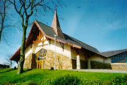
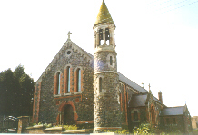

News and Events
| DOWN AND CONNOR DIOCESE INFO | CARRICKFERGUS STATISTICS | CARRICKFERGUS COMMUNITY FORUM |
| THIS WEEK'S BULLETIN | PARISH COMMUNITY DIAGRAM (DRAFT) | TODAY'S PRAYERS OF THE CHURCH |
NORMAL SUNDAY PARISH MASS TIMES
Sunday Mass Times as follows:


Carrickfergus 11.30 am Whitehead 9.30 am
Vigil Mass Carrickfergus only - Saturday 6pm
(No Sunday evening Masses)
Why come to Mass?
(and there's more)